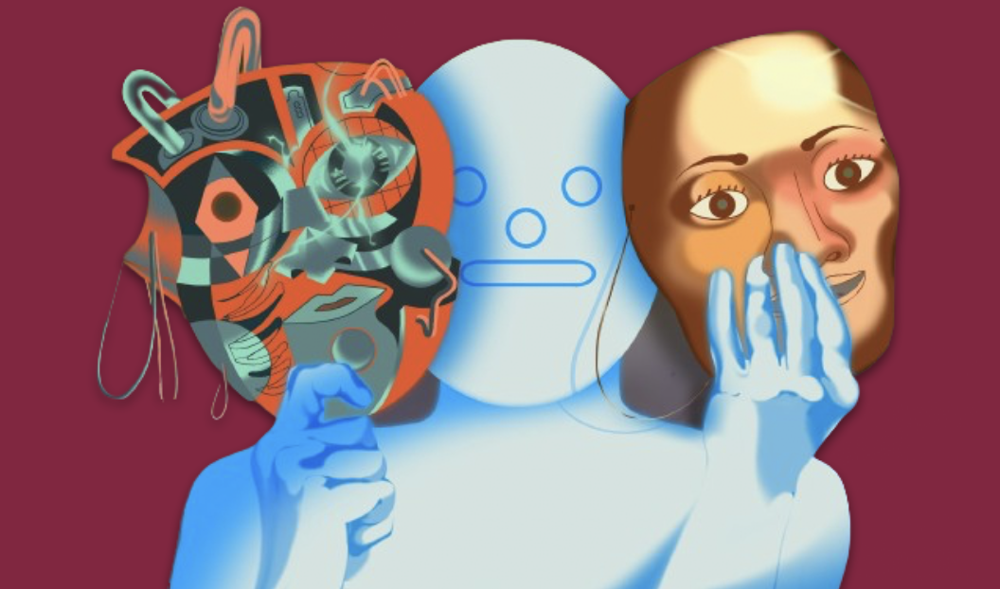

The rise of large language models like ChatGPT has sparked a revolution in how we perceive and interact with artificial intelligence. As these models become more integrated into our daily lives and industries, a critical question emerges: Where do LLMs stand? Are they merely assistive tools, or are they creators themselves? This question is central to the ongoing debates in fields ranging from copyright law to creative industries.
As the capabilities of LLMs like OpenAI’s GPT models expand, they increasingly tread into territories traditionally reserved for human creativity. This transition has not gone unnoticed by legal bodies and industries, exemplified by cases such as Getty Images suing Stability AI. Such legal actions highlight the urgent need to delineate the boundaries between human and AI-generated creations, particularly regarding issues of consent, compensation, and copyright.

Efforts to improve the reliability of LLMs focus on reducing errors and increasing factual accuracy. Techniques such as Pareto Optimal Learning Assessed Risk (POLAR) scores aim to mitigate hallucination errors, whereas new methods are developed to bolster factual correctness. These advancements are not merely technical but are guided by an ethical imperative to ensure that AI tools augment rather than replace human effort.
A nuanced approach to distinguishing AI contributions involves collaborative and corroborative attributes. Collaborative attributes refer to the core machine learning elements derived from extensive training data, including artworks and content created by humans. In contrast, corroborative attributes, akin to citation checkers, help verify the origins of AI-generated outputs, ensuring proper attribution and reducing instances of unauthorized use of copyrighted material..
The legal landscape is still adapting to the challenges posed by AI. From individual copyright disputes to broader regulatory frameworks, the recognition that current laws primarily cater to human creators is prompting a reevaluation of what constitutes authorship and creativity. This legal uncertainty affects startups and established companies alike, pushing for innovations in how AI tools are developed and deployed.
The narrative of AI as a tool versus a creator is evolving. As we stand at this technological crossroads, the path forward involves a balanced approach that respects copyright, fosters innovation, and maintains ethical integrity. It is imperative that all stakeholders—developers, users, and legal experts—collaborate to craft a framework that not only addresses today’s challenges but also anticipates tomorrow’s opportunities.
Large language models continue to push the boundaries of what machines can achieve. As society navigates these developments, the focus should remain on leveraging AI as a powerful tool for enhancement and creativity, ensuring that it serves as a complement to human ingenuity, not a replacement. Such an effort is our small project in faith to put LLMs on ethical side. Please do check our paper in the section beside.